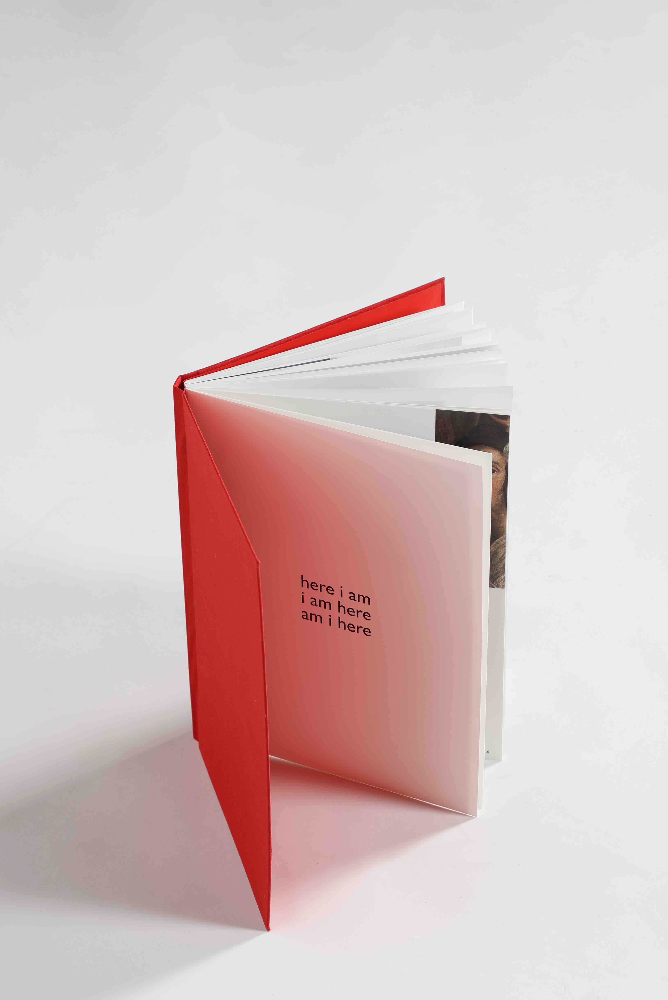
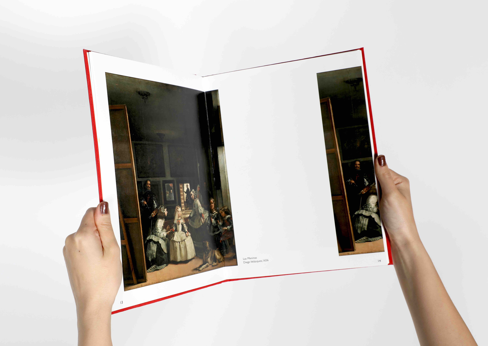
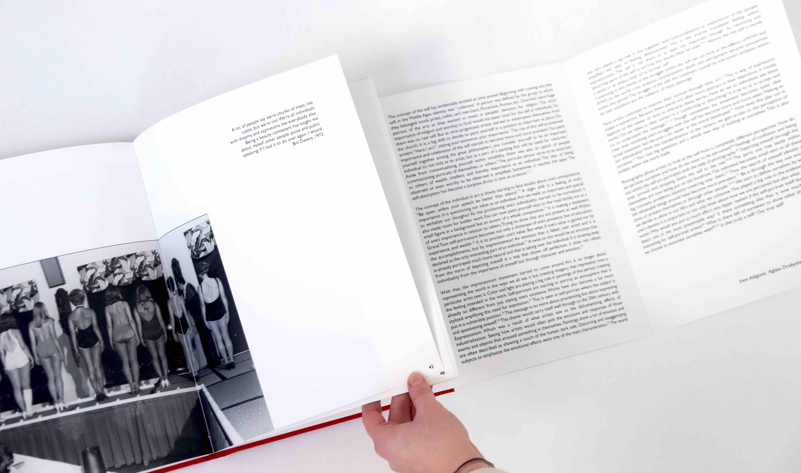
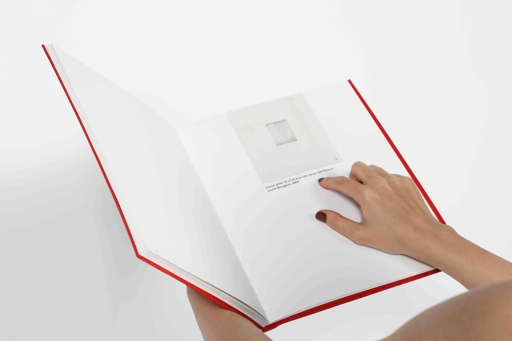
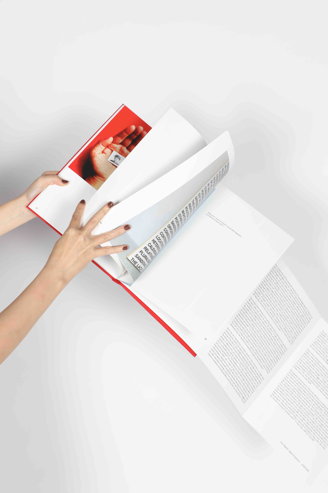
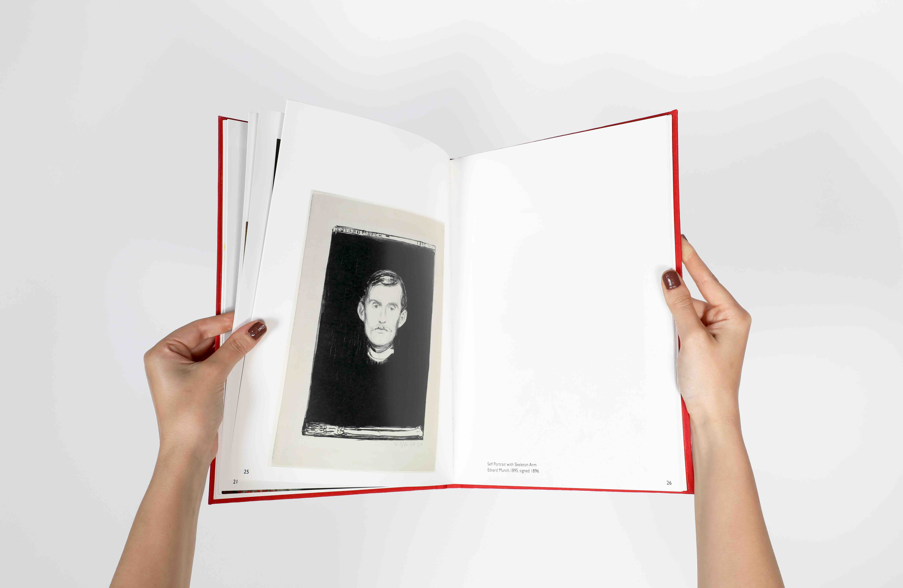
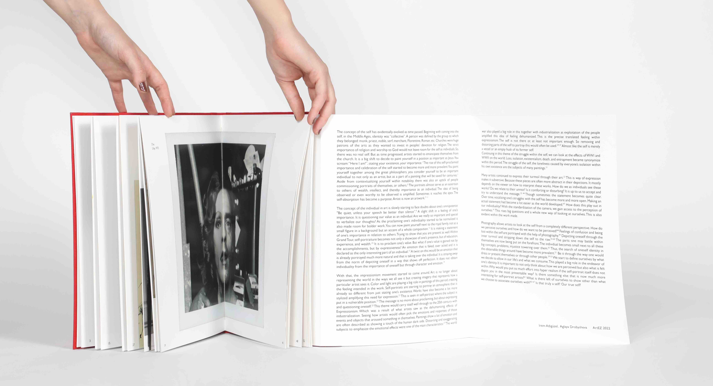
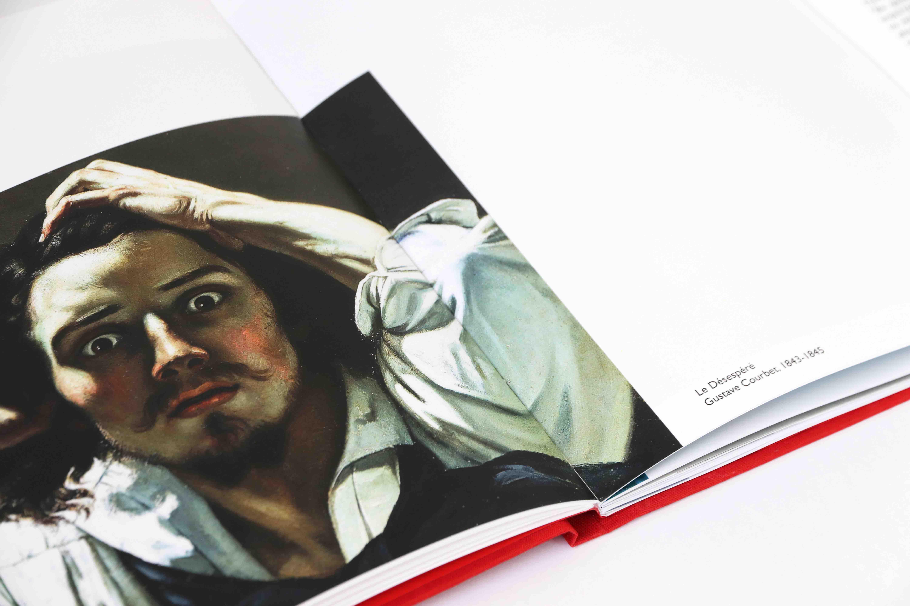
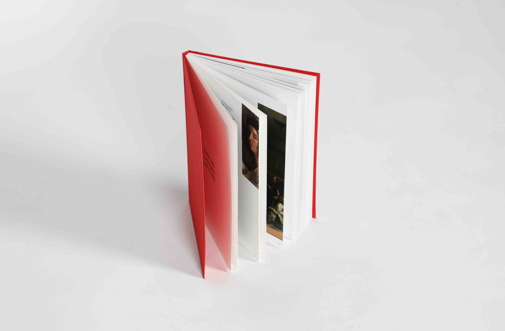
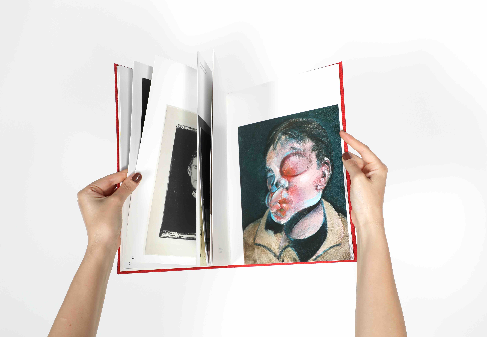

Publication
December 2022






Typeface: Gill Sans
Made in collaboration
with Irem Adigüzel
Guided by Rolf Schoeber
ArtEZ
2022

A collaborative book project about individualism illustrated with the development of self-portrait throughout the history of art. The project included research, artwork selection, book design, essay writing and editing.
The Individual - is something we highly value within the western world. Standing out, being different, unforgettable. The importance of the self and self-identity has been slowly rising over centuries. With that the volume of capturing the individual within artworks has been ever increasing as well. As time and human development went on, the idea of the 'self' transformed alongside. This process is also reflected in the works we make as artists. The way we view ourselves is something that always changes. Is this for better or worse? Where is the Self heading towards?


